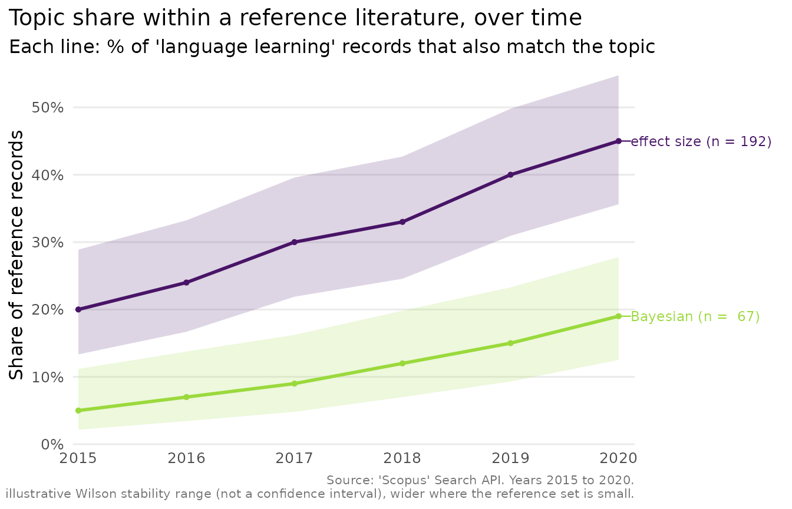

This vignette is fully reproducible without a Scopus API key. It draws on a small static fixture bundled with the package, so the whole workflow can be shown offline. The few steps that genuinely need the API are shown but not run.
Describing a search as a plan
A plan separates describing a search from executing it. Plans are
inspectable, saveable and version-controllable, and they can be
partitioned, for example by year, so that a large retrieval stays under
the API’s start < 5000 ceiling and can be cached and
resumed.
plan <- scopus_plan(
"machine translation",
years = 2018:2020,
field = "TITLE-ABS-KEY",
partition = "year"
)
plan| cell | query | date | year | view | page_size |
|---|---|---|---|---|---|
| 1 | TITLE-ABS-KEY(machine translation) | 2018 | 2018 | STANDARD | 200 |
| 2 | TITLE-ABS-KEY(machine translation) | 2019 | 2019 | STANDARD | 200 |
| 3 | TITLE-ABS-KEY(machine translation) | 2020 | 2020 | STANDARD | 200 |
Each row is one query cell. Field tags wrap the query and years become a date filter:
scopus_plan("language learning", field = "TITLE")$query
#> [1] "TITLE(language learning)"
scopus_plan("x", years = 2015:2020)$date
#> [1] "2015-2020"
# A plan is a classed object; is_scopus_plan() confirms it.
is_scopus_plan(plan)
#> [1] TRUESizing and fetching
scopus_has_key() reports whether a key is configured,
without revealing it. It is the guard the package’s own examples use to
skip the steps that need the API, so it is the natural switch for a
reproducible script:
scopus_has_key()
#> [1] FALSEWith a key configured, you size a search cheaply and then execute the plan, optionally caching each cell so that an interrupted run resumes without re-spending quota. These contact the API, so they are not evaluated here:
scopus_count("machine translation", years = 2018:2020, field = "TITLE-ABS-KEY")
records <- scopus_fetch_plan(plan, cache_dir = scopus_cache_dir(), resume = TRUE)The record schema
Whether records come from the API or from the bundled example data, they share one stable schema. The package ships a small, already normalised set, which we use here to continue offline:
records <- example_records
records| entry_number | scopus_id | doi | title | authors | year | date | publication | citations | query |
|---|---|---|---|---|---|---|---|---|---|
| 1 | 85000000001 | 10.1038/s41586-019-0001-1 | Genome editing with CRISPR-Cas9: principles and applications | Zhang F. | 2019 | 2019-04-12 | Nature | 540 | illustrative multi-disciplinary sample |
| 2 | 85000000002 | 10.1038/s41586-020-0002-2 | Deep learning for medical image analysis: a review | Kumar S. | 2020 | 2020-02-20 | Nature | 210 | illustrative multi-disciplinary sample |
| 3 | 85000000003 | 10.1038/s41558-018-0085-1 | Climate change adaptation in coastal megacities | Okafor N. | 2018 | 2018-03-19 | Nature Climate Change | 122 | illustrative multi-disciplinary sample |
| 4 | 85000000004 | 10.1002/adma.202100001 | Graphene electrodes for next-generation energy storage | Tanaka H. | 2021 | 2021-01-15 | Advanced Materials | 45 | illustrative multi-disciplinary sample |
| 5 | 85000000005 | 10.1016/S1470-2045(20)30013-9 | Checkpoint inhibitors in cancer immunotherapy | Garcia M. | 2020 | 2020-07-01 | The Lancet Oncology | 388 | illustrative multi-disciplinary sample |
| 6 | 85000000006 | 10.1103/PhysRevLett.116.061102 | Observation of gravitational waves from a binary black hole merger | Abbott B. | 2016 | 2016-02-11 | Physical Review Letters | 4200 | illustrative multi-disciplinary sample |
# A record set is a classed tibble; is_scopus_records() confirms the contract.
is_scopus_records(records)
#> [1] TRUEscopus_records() produces this same shape from a raw API
response, flattening the nested result into one row per record.
DOIs and change tracking
Extract a clean, deduplicated DOI list for import into a reference manager, and compare two retrievals to see exactly what changed:
dois <- scopus_extract_dois(records)
dois
#> [1] "10.1038/s41586-019-0001-1" "10.1038/s41586-020-0002-2"
#> [3] "10.1038/s41558-018-0085-1" "10.1002/adma.202100001"
#> [5] "10.1016/S1470-2045(20)30013-9" "10.1103/PhysRevLett.116.061102"
# Suppose a later retrieval added one DOI and dropped another.
later <- c(dois[-1], "10.1000/example.999")
scopus_diff_dois(old = dois, new = later)| doi | status |
|---|---|
| 10.1000/example.999 | added |
| 10.1038/s41586-019-0001-1 | removed |
| 10.1002/adma.202100001 | unchanged |
| 10.1016/S1470-2045(20)30013-9 | unchanged |
| 10.1038/s41558-018-0085-1 | unchanged |
| 10.1038/s41586-020-0002-2 | unchanged |
| 10.1103/PhysRevLett.116.061102 | unchanged |
You can write the DOIs to a path you specify:
out <- file.path(tempdir(), "dois.csv")
scopus_extract_dois(records, file = out)
readLines(out)
#> [1] "\"doi\"" "\"10.1038/s41586-019-0001-1\""
#> [3] "\"10.1038/s41586-020-0002-2\"" "\"10.1038/s41558-018-0085-1\""
#> [5] "\"10.1002/adma.202100001\"" "\"10.1016/S1470-2045(20)30013-9\""
#> [7] "\"10.1103/PhysRevLett.116.061102\""Comparing topic trends
scopus_compare_topics() issues one count request per
term per year, so it needs the API. Its output has a fixed shape, which
we reproduce here to show the plot:
cmp <- scopus_compare_topics(
reference_query = "language learning",
comparison_terms = c("effect size", "Bayesian"),
years = 2015:2020,
field = "TITLE-ABS-KEY"
)
# A stand-in comparison object with the same columns scopus_compare_topics()
# returns, so the plotting step is reproducible offline.
cmp <- tibble::tibble(
query = "q",
query_type = rep(c("reference", "comparison", "comparison"), each = 6),
abridged_query = rep(c("language learning", "effect size", "Bayesian"), each = 6),
year = rep(2015:2020, 3),
n = c(rep(100, 6), 20, 24, 30, 33, 40, 45, 5, 7, 9, 12, 15, 19),
reference_n = rep(100, 18),
comparison_percentage = c(rep(100, 6), 20, 24, 30, 33, 40, 45, 5, 7, 9, 12, 15, 19),
average_comparison_percentage = rep(c(100, 32, 11.2), each = 6)
)
class(cmp) <- c("scopus_comparison", class(cmp))
cmp| query | query_type | abridged_query | year | n | reference_n | comparison_percentage | average_comparison_percentage |
|---|---|---|---|---|---|---|---|
| q | reference | language learning | 2015 | 100 | 100 | 100 | 100.0 |
| q | reference | language learning | 2016 | 100 | 100 | 100 | 100.0 |
| q | reference | language learning | 2017 | 100 | 100 | 100 | 100.0 |
| q | reference | language learning | 2018 | 100 | 100 | 100 | 100.0 |
| q | reference | language learning | 2019 | 100 | 100 | 100 | 100.0 |
| q | reference | language learning | 2020 | 100 | 100 | 100 | 100.0 |
| q | comparison | effect size | 2015 | 20 | 100 | 20 | 32.0 |
| q | comparison | effect size | 2016 | 24 | 100 | 24 | 32.0 |
| q | comparison | effect size | 2017 | 30 | 100 | 30 | 32.0 |
| q | comparison | effect size | 2018 | 33 | 100 | 33 | 32.0 |
| q | comparison | effect size | 2019 | 40 | 100 | 40 | 32.0 |
| q | comparison | effect size | 2020 | 45 | 100 | 45 | 32.0 |
| q | comparison | Bayesian | 2015 | 5 | 100 | 5 | 11.2 |
| q | comparison | Bayesian | 2016 | 7 | 100 | 7 | 11.2 |
| q | comparison | Bayesian | 2017 | 9 | 100 | 9 | 11.2 |
| q | comparison | Bayesian | 2018 | 12 | 100 | 12 | 11.2 |
| q | comparison | Bayesian | 2019 | 15 | 100 | 15 | 11.2 |
| q | comparison | Bayesian | 2020 | 19 | 100 | 19 | 11.2 |
if (requireNamespace("ggplot2", quietly = TRUE)) {
plot_scopus_comparison(cmp)
}
Author keywords and references
A search only returns the fields the Search API carries. Author
keywords and a document’s own reference list need
view = "COMPLETE" and Abstract Retrieval respectively, both
at a materially different quota cost from an ordinary search;
vignette("keywords-and-references") walks through both, and
scopus_corpus(), which combines them into a minimal
id/title/year/keywords/references
shape for downstream tools.
Export and interoperability
Hand results to bibliometrix-style workflows, or save
and reload them:
head(as_bibliometrix(records))| AU | TI | SO | DI | PY | TC | UT | DB |
|---|---|---|---|---|---|---|---|
| ZHANG F. | GENOME EDITING WITH CRISPR-CAS9: PRINCIPLES AND APPLICATIONS | NATURE | 10.1038/s41586-019-0001-1 | 2019 | 540 | 85000000001 | SCOPUS |
| KUMAR S. | DEEP LEARNING FOR MEDICAL IMAGE ANALYSIS: A REVIEW | NATURE | 10.1038/s41586-020-0002-2 | 2020 | 210 | 85000000002 | SCOPUS |
| OKAFOR N. | CLIMATE CHANGE ADAPTATION IN COASTAL MEGACITIES | NATURE CLIMATE CHANGE | 10.1038/s41558-018-0085-1 | 2018 | 122 | 85000000003 | SCOPUS |
| TANAKA H. | GRAPHENE ELECTRODES FOR NEXT-GENERATION ENERGY STORAGE | ADVANCED MATERIALS | 10.1002/adma.202100001 | 2021 | 45 | 85000000004 | SCOPUS |
| GARCIA M. | CHECKPOINT INHIBITORS IN CANCER IMMUNOTHERAPY | THE LANCET ONCOLOGY | 10.1016/S1470-2045(20)30013-9 | 2020 | 388 | 85000000005 | SCOPUS |
| ABBOTT B. | OBSERVATION OF GRAVITATIONAL WAVES FROM A BINARY BLACK HOLE MERGER | PHYSICAL REVIEW LETTERS | 10.1103/PhysRevLett.116.061102 | 2016 | 4200 | 85000000006 | SCOPUS |
path <- file.path(tempdir(), "records.rds")
write_scopus_records(records, path)
identical(read_scopus_records(path), records)
#> [1] TRUEHandling failures
Network and API problems surface as typed conditions, all inheriting
from scopus_error, so a workflow can respond to them in
code:
tryCatch(
scopus_fetch("..."),
scopus_error_no_key = function(e) message("No API key configured."),
scopus_error_rate_limit = function(e) message("Rate limited, so backing off."),
scopus_error = function(e) message("Scopus error: ", conditionMessage(e))
)